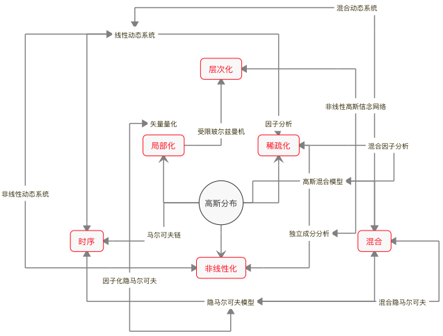

- 00 开篇词 打通修炼机器学习的任督二脉.md
- 01 频率视角下的机器学习.md
- 02 贝叶斯视角下的机器学习.md
- 03 学什么与怎么学.md
- 04 计算学习理论.md
- 05 模型的分类方式.md
- 06 模型的设计准则.md
- 07 模型的验证方法.md
- 08 模型的评估指标.md
- 09 实验设计.md
- 10 特征预处理.md
- 11 基础线性回归：一元与多元.md
- 12 正则化处理：收缩方法与边际化.md
- 13 线性降维：主成分的使用.md
- 14 非线性降维：流形学习.md
- 15 从回归到分类：联系函数与降维.md
- 16 建模非正态分布：广义线性模型.md
- 17 几何角度看分类：支持向量机.md
- 18 从全局到局部：核技巧.md
- 19 非参数化的局部模型：K近邻.md
- 20 基于距离的学习：聚类与度量学习.md
- 21 基函数扩展：属性的非线性化.md
- 22 自适应的基函数：神经网络.md
- 23 层次化的神经网络：深度学习.md
- 24 深度编解码：表示学习.md
- 25 基于特征的区域划分：树模型.md
- 26 集成化处理：Boosting与Bagging.md
- 27 万能模型：梯度提升与随机森林.md
- 28 最简单的概率图：朴素贝叶斯.md
- 29 有向图模型：贝叶斯网络.md
- 30 无向图模型：马尔可夫随机场.md
- 31 建模连续分布：高斯网络.md
- 32 从有限到无限：高斯过程.md
- 33 序列化建模：隐马尔可夫模型.md
- 34 连续序列化模型：线性动态系统.md
- 35 精确推断：变量消除及其拓展.md
- 36 确定近似推断：变分贝叶斯.md
- 37 随机近似推断：MCMC.md
- 38 完备数据下的参数学习：有向图与无向图.md
- 39 隐变量下的参数学习：EM方法与混合模型.md
- 40 结构学习：基于约束与基于评分.md
- 如何成为机器学习工程师？.md
- 总结课 机器学习的模型体系.md
- 总结课 贝叶斯学习的模型体系.md
- 结课 终有一天，你将为今天的付出骄傲.md
总结课 贝叶斯学习的模型体系
在今天这篇总结中，我将对贝叶斯机器学习中涉及的模型做一个系统的梳理。虽然这个模块的主题是概率图模型，内容也围绕着概率图的三大问题——表示、推断和学习展开，但概率图归根结底是手段，其目的是将概率分布用图结构表示出来，进而从贝叶斯定理出发，从概率角度解决机器学习的问题。因此从宏观的角度来对概率模型加以整理是很有必要的。
概率模型基本上都属于生成模型，它们可以建模数据的生成机制，这和统计机器学习以判别模型为主的特色形成鲜明的对比。在统计学习中，几乎所有模型都可以追溯到线性回归的演化，在贝叶斯学习里，起到万物之源作用的是具有最大不确定性的高斯分布，对高斯分布的不同处理方式决定了不同的数据生成方式。
在观察高斯分布的演化时，不妨先从外部入手。最简单的外部拓展方法就是混合，将多个不同数字特征的高斯分布混杂在一起，先按一定概率抽取成分，再根据选定的成分分布生成数据，这种生成模型就是高斯混合模型。在高斯混合模型里，决定每个时刻的观察结果到底来自哪个成分的变量不能被直接观测，因而是隐变量。
除了横向意义上的混合之外，纵向意义上的时序也是外部演化的常见手段，这相当于在数据序列中引入马尔可夫性。如果给高斯混合模型中的隐变量添加时序关系，让下一时刻的状态依赖于这一时刻的状态，就形成了隐马尔可夫模型。如果隐马尔可夫模型的状态数目从有限扩展到无穷多，又形成了线性动态系统。
看完了外部拓展，再来看看内部拓展。贝叶斯模型的内部改进与统计模型类似，无外乎非线性化、局部化和稀疏化三种方式。非线性化改造容易理解，它是将状态转移和状态到观测的关系建模为非线性关系，可以得到非线性动态系统。但这类非线性系统难以求出解析解，也得进行线性的近似。
在概率模型中，稀疏化，也就是降维的最典型方法是因子分析（factor analysis）。因子分析的任务是构造因子模型，将去均值后的观测结果表示成一组公因子（common factor）的线性组合。比如在分析学生的成绩时，物理/化学/生物这几门课程之间会存在较强的相关性，政治/历史/地理这几门课程也会存在较强的相关性，物理/政治、化学/历史之间的相关性就会较弱，这样的相关关系就可以用理科和文科两个互不相关的公因子来刻画。
不难看出，公因子的作用类似高斯混合模型中的隐变量，但它可以起到降维的作用，前面介绍过的主成分分析就可以看成是因子分析的一种实现方式。如果对线性的因子分析做非线性处理，得到的就是独立成分分析。独立成分分析并不强制要求所有源信号以线性方式混合，因而可以作为非线性模型出现。
概率模型的局部化并非将整个定义域上的概率分布打散成若干局部的组合，而是直接一步到位地进化到分布式表示，其直接的结果是矢量量化（vector quantization）。矢量量化和统计学习中的聚类类似，将它添加一个隐藏层就是自编码器。如果将矢量量化的编码结果进行层次化的堆叠，那就形成了玻尔兹曼机——深度学习的早期模型之一。
高斯分布演化出来的模型可以作为基础模型应用到外部的组合中。比如对独立成分分析的结果进行层次化组合，可以得到非线性的高斯网络；对多个隐马尔可夫模型进行混合，可以得到混合隐马尔可夫模型；给矢量量化过程引入时序，实现的又是因子化的隐马尔可夫模型。正所谓一生二、二生三、三生万物，有了基础模型和基本方法，各种复杂的模型就都可以被串联起来。
关于这些具体模型的推断与学习方法推荐阅读发表在《神经计算》（Neural Computation）第11卷第2期上的文章《线性高斯模型的大一统综述》（A Unifying Review of Linear Gaussian Models），这是一篇非常好的综述文章。

贝叶斯学习模型鸟瞰图
从概率图模型和贝叶斯机器学习的体系出发，我向你推荐以下的参考书。
《贝叶斯方法》（Bayesian Methods for Hackers），卡梅隆·戴维森-皮隆（Cameron Davidson-Pilon）
《贝叶斯思维》（Think Bayes），艾伦·唐尼（Allen B. Downey）
这两本书是贝叶斯概率理论的入门读物，它们不像学院派的教材那样用冗长的公式和复杂的符号让人望而却步，而是通过更加贴近生活的实例来传递贝叶斯理论的核心要义，读起来比较轻松。这两本书能带给你关于贝叶斯直观而感性的认识，让艰深的理论看起来没那么晦涩。
《贝叶斯统计方法》（Doing Bayesian Data Analysis），约翰·克鲁斯克（John K. Kruschke）
《贝叶斯数据分析》（Bayesian Data Analysis），安德鲁·格尔曼等（Andrew Gelman, et. al.）
这两本书是将贝叶斯的思想用于统计学和数据分析的进阶读物，其中前者侧重于贝叶斯的统计学，后者侧重于贝叶斯的数据分析，与机器学习结合得更加紧密。和前面两本小书相比，这两本称得上是大部头，两者结合形成了对贝叶斯概率应用的全面图景。
《概率图模型》（Probabilistic Graphical Models），达芙妮·科勒 & 尼尔·弗里德曼（Daphne Koller, Nir Friedman）
《贝叶斯推理与机器学习》（Bayesian Reasoning and Machine Learning），大卫·巴伯（David Barber）
如果说上面两本书是大部头，那《概率图模型》就称得上皇皇巨著了。和《机器学习：概率视角》一样，它也是适用于有问题时查阅的百科全书式教材，当作教材的体验并不理想。后面这一部虽然篇幅小了很多，难度却不遑多让。但这两本大书都是干货满满，如果能花时间深入学习，定能带你从量变走向质变。
行文至此，机器学习这个专栏已经走到尾声。这40篇文章是否带给你些许收获，你又对机器学习产生了哪些新的认识呢？欢迎你留言和我讨论。
© 2019 - 2023 Liangliang Lee. Powered by gin and hexo-theme-book.